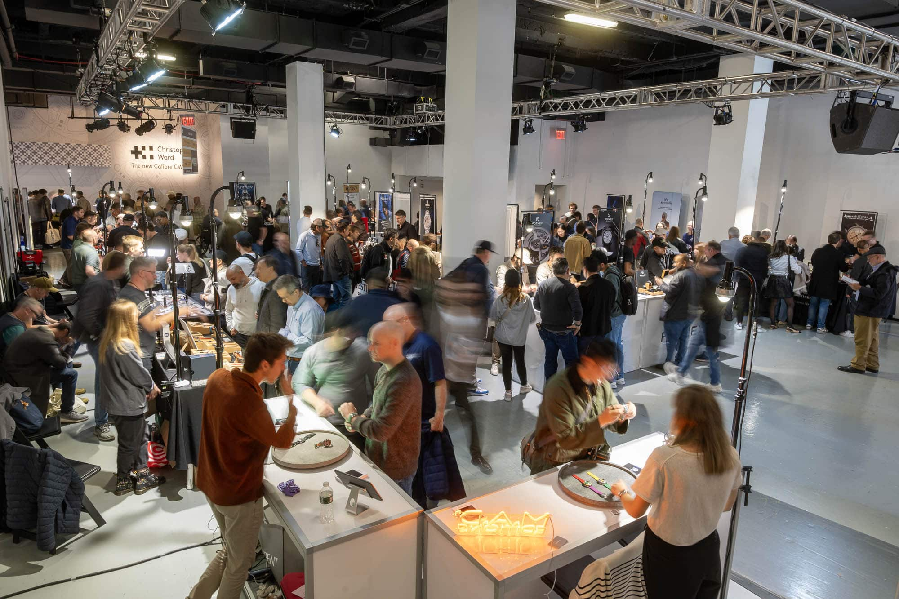

I Wish There Was An Event That...
I wish there was an event that strips away the pretense of the watch world. An event that isn't about velvet ropes, glamorous halls, or intimidating exclusivity. I wish there was a place, open to everyone, that is simply a celebration of our shared passion.
 Nenad Pantelic • October 28, 2025
Nenad Pantelic • October 28, 2025

I Wish for a Place That's Open to Everyone
I wish there was an event where the doors were open to all, completely free of charge. An event where you didn't need to be an expert, an influences, a media personality, or even dressed a certain way to feel welcome.
It would be a place for the experienced collector and the casually curious to stand side-by-side, united by a common interest. The atmosphere wouldn't be stuffy or silent, but filled with the buzz of conversation and the energy of discovery. Like a local meetup in a bar, like a gathering of a community.
I Wish for an Event With No Glass Cases
I wish there was an event where the watches weren't locked away behind glass cases. Instead, they would be laid out on tables, inviting you to pick them up, to feel their weight and texture in your own hands. You could try on dozens of pieces from different makers, one after the other, without any pressure or obligation.
It would be an experience built on trust and a shared love for the objects, where the most common answer to "Can I try this on?" is a friendly, "Of course! That's what they're here for!"
I Wish I Could Meet the Makers
I wish there was an event where you could talk directly to the creators. An event where, instead of speaking with a sales associate, you find yourself chatting with the brand's founder, the owner, or the chief designer.
You could hear the passion in their voice as they explain their design philosophy, the inspiration behind a dial, or the challenges of bringing their vision to life. It would transform a simple viewing into a genuine connection, and a memorable interaction between an enthusiast and the brand owner.
I Wish It Was a Cool Gathering, Not a Trade Show
I wish there was an event which was less about the business of watches, and more about the community and a gathering. An event designed to be democratic and friendly, encouraging exchanges between brands and visitors.
It would feel like a "celebration of enthusiasm," where the main goal is to connect with like-minded people. It would be a cornerstone for the watch community, a place where the love of watches brings people from all walks of life.
I Wish I Could Just... Buy the Watch
I wish there was an event where I could actually buy a special edition instead of just stating my interest and being put on a long waitlist. A place that is an active commercial event, where visitors can purchase watches directly on the spot.
Brands would create exclusive, special edition watches available only at the fair, giving you a chance to walk away with something unique. It would be a place where you could make a purchase in one go, without the usual barriers.
Wait... This Isn't Just a Wish?
"I'm sorry, say again!"
"Aha, I see, this place exists. It’s called the Windup Watch Fair."
Created by the team at Worn & Wound, it was founded with the simple goal of bringing watch enthusiasts together in a fun, approachable setting. For a (freakin' 😮) decade it has been the perfect example of everything a modern watch event should be: democratic, hands-on, and built for the community.
For sure it is the fair the watch world needed, and luckily it is very, very real.
The lead photo is courtesy of Worn & Wound.